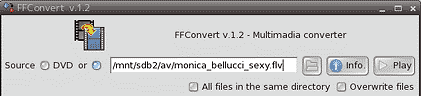

The FFConvert is a frontend of the FFMpeg, a converting tool of mutlinedia(audio and/or video) files.
Two options to launch FFConvert

Drug-and-drop the source(audio or video) file onto the entry box.
Or you can use the file browsing button.
Tick on the 'All files...' to search all the files in the directory with the same extention('.flv' for an example).
You can use the 'DVD' to rip a DVD-video if the DVD drive is available.
Drug-and-drop a directory(folder) for the converted files on the entry box.
Or you can use the file browsing button.
Tick on the 'Overwite files' to overwrite the files with the same name if exists.
A directory on the real HDD (under '/mnt') is recommended for the frugal installs. Required enough free space.
Open the pull-down list and select the preset you want for the target format, and click 'Load'. The default settings will be set up.
You can change the options if you need.
Just click the 'Convert' button.
Have a fun!